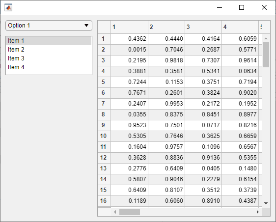
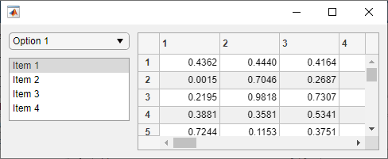
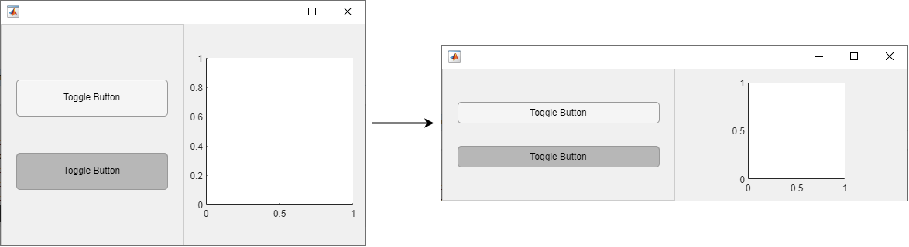

Manage App Resize Behavior Programmatically
Apps created using the uifigure function are resizable by
default. The components reposition and resize automatically as the app user changes the
size of the window at run-time.
If you want more flexibility over how your app resizes, use one of these methods:
Use a Grid Layout Manager — Add components to a grid, and specify how the rows and columns of the grid resize.
Write Code to Manage Resize Behavior — Write a
SizeChangedFcncallback that resizes UI components. The callback executes whenever the figure window size changes.Turn Off Resizing of Specific Components — Specify the
AutoResizeChildrenproperty of specific containers in your app.Turn Off App Resizing Entirely — Set the
Resizeproperty of the figure to'off'.
Use a Grid Layout Manager
A grid layout manager is a container that allows you to lay out UI components in a grid. You can configure grid layout managers to specify the initial layout and resize behavior of the components in the grid.
Create a grid layout manager in a UI figure window by calling the uigridlayout function and specifying the figure as the first
argument. Set the RowHeight and
ColumnWidth properties of the grid layout manager to
specify how each row and column behaves when the app user resizes the figure window.
Specify RowHeight and ColumnWidth as a
cell array with one value for each row or column. There are three different types of
row heights and column widths:
Fit size — Specify
'fit'. The row height or column width is fixed to automatically fit its contents. The dimension does not change when the app is resized.Fixed size — Specify a number in pixels. The row height or column width is fixed at the number of pixels you specify. The dimension does not changed when the app is resized.
Variable size — Specify a number paired with an
'x'character (for example,'1x'). Variable-height rows fill the remaining vertical space that the fixed-height rows do not use, and variable-width columns fill the remaining horizontal space that fixed-width rows do not use. The number you pair with the'x'character is a weight for dividing up the remaining space, where the amount of space is proportional to the number. For instance, if one row has a width of'2x'and another has a width of'1x', the first row grows or shrinks twice as much as the second when the app is resized.
For example, this code creates a grid layout manager with four rows. The height of the first row is sized to fit its content, the second row is fixed at 200 pixels, and the last two rows share the remaining vertical space unequally. The third row uses twice as much space as the fourth row.
fig = uifigure;
gl = uigridlayout(fig,[4 1]);
gl.RowHeight = {'fit',200,'2x','1x'};For more information about laying out apps using a grid layout manager, see Lay Out Apps Programmatically.
Example: Resizable App Using a Grid Layout Manager
This example demonstrates how to configure a grid layout manager to specify
app resize behavior. The app contains a drop-down, a list box, and a table with
some data. Create a UI figure window with a 3-by-2 grid layout. Then, create the
UI components and add them to the grid layout by specifying the
Layout.Row and Layout.Column
properties.
fig = uifigure; gl = uigridlayout(fig,[3 2]); dd = uidropdown(gl); dd.Layout.Row = 1; dd.Layout.Column = 1; lb = uilistbox(gl); lb.Layout.Row = 2; lb.Layout.Column = 1; tbl = uitable(gl); tbl.Data = rand(100); tbl.Layout.Row = [1 3]; tbl.Layout.Column = 2;
Configure the app layout and resize behavior by setting the
RowHeight and ColumnWidth
properties of the grid layout manager:
Specify
'fit'for the first row. This automatically adjusts the row height to fit the height of the drop-down.Specify a height of 80 pixels for the second row. This fixes the list box height when the app is resized.
Specify a height of
'1x'for the third row. This fills the remaining vertical space.Specify a width of
'1x'for the first column and'2x'for the second. This ensures that all components resize horizontally, and the table always occupies twice as much horizontal space as the other components.
gl.RowHeight = {'fit',80,'1x'};
gl.ColumnWidth = {'1x','2x'};
Resize the figure window by dragging one of the window corners. The UI components resize according to the grid layout specifications.

Write Code to Manage Resize Behavior
When you want to provide resize behavior that the grid layout manager does not
support, consider managing your app layout using SizeChangedFcn
callbacks. For example, use this method if you want to:
Resize a component up to a minimum or maximum size that you define.
Implement non-linear resize behaviors.
To specify resize behavior in this way, follow these steps:
Write callback functions for each container in your app to manage the layout of its children when the window size changes.
Turn off automatic resizing by setting the
AutoResizeChildrenproperty of each container to'off'. This step is required because theSizeChangedFcncallback for a container does not execute when theAutoResizeChildrenproperty is'on'.Set the
SizeChangedFcnproperty of each container to a handle to the appropriate callback function.
It is a good practice to put all the layout code for each container
inside the SizeChangedFcn callback to ensure the most accurate
results.
The SizeChangedFcn callback executes when one of these happens:
The container becomes visible for the first time.
The container is visible while its size changes.
The container becomes visible for the first time after its size changes. This occurs when the size changes while the container is invisible, and then it becomes visible later.
Tip
It is a good practice to delay the display of the container until after all
the variables that the SizeChangedFcn uses are defined.
This practice can prevent the SizeChangedFcn callback from
returning an error. To delay the display of the container, set its
Visible property to 'off'. Then, set
the Visible property to 'on' after you
define the variables that your SizeChangedFcn callback
uses.
Example: Resizable App Using SizeChangedFcn
This example demonstrates how to create an app that uses custom resize logic
to manage the size of toggle buttons within a button group, and to fix the
aspect ratio of a set of axes. Create a file named
sizeChangedApp.m in your current folder, and define the
main sizeChangedApp function at the top of the file.
Write a helper function named createComponents to create
the figure and UI components, and store the UI components in the
UserData of the figure. This allows you to access your
app data within the figure SizeChangedFcn callback
function. For more information about sharing app data, see Share Data Among Callbacks.
Call the createComponents function in your main app
function, and then make the figure window visible.
function sizeChangedApp fig = createComponents; fig.Visible = 'on'; end % Create UI components function fig = createComponents fig = uifigure('Visible','off', ... 'AutoResizeChildren','off', ... 'SizeChangedFcn',@figResize); btngrp = uibuttongroup(fig, ... 'AutoResizeChildren','off', ... 'SizeChangedFcn',@bgResize); btn1 = uitogglebutton(btngrp); btn2 = uitogglebutton(btngrp); ax = uiaxes(fig); % Store components fig.UserData = struct(... 'ButtonGroup',btngrp, ... 'Button1',btn1, ... 'Button2',btn2, ... 'Axes',ax); end
Then, write one SizeChangedFcn resize function for the
figure window and another one for the button group. Each function manages the
resize behavior of its immediate children.
For the figure window, write a callback named figResize to
manage the location and size of the ButtonGroup and
Axes objects whenever the user resizes the window:
Position the button group to span the entire left half of the figure.
Position the axes to maintain a square aspect ratio and a position in the center of the right half of the figure:
Set the width and height of the
Axesobject to be the same, with the number of pixels given byaxdim. The value ofaxdimis the value that fills the right half of the figure to its fullest, allowing for 10 pixels of space on each size of the axes and subject to the constraint that the axes remains square. The commandaxdim = max(axdim,0)ensures the dimensions of the axes are never negative.Set the left edge of the axes,
axleft, so that the axes is horizontally centered in the right half of the figure.Set the bottom edge of the axes,
axbottom, so that the axes is vertically centered in the figure.
function figResize(src,event) % Get UserData to access components data = src.UserData; % Get figure size figwidth = src.Position(3); figheight = src.Position(4); % Resize button group data.ButtonGroup.Position = [1 1 figwidth/2 figheight]; % Resize axes axdim = min(figwidth/2,figheight) - 20; axdim = max(axdim,0); axleft = figwidth/2 + (figwidth/2-axdim)/2; axbottom = (figheight-axdim)/2; data.Axes.Position = [axleft axbottom axdim axdim]; end
For the button group, write a callback named bgResize to
manage the location and size of the ToggleButton objects.
This callback is executed whenever the ButtonGroup object
changes size, which occurs whenever the user resizes the figure window. In this
function, position the two toggle buttons relative to the size of the
ButtonGroup object:
Set the left edge and width of each toggle button,
btnleftandbtnwidth, to allow for 20 pixels of space between the button edges and the container edges on both the left and the right side.Set the height of each toggle button,
btnheight, to 1/6 the height of the button group.Set the bottom of each toggle button,
btn1bottomandbtn2bottom, so that the space above the top button and below the bottom button is 1/4 the height of the button group.
This is the code for the app:
function bgResize(src,event) % Get UserData to access components fig = ancestor(src,'figure','toplevel'); data = fig.UserData; % Get button group size bgwidth = src.Position(3); bgheight = src.Position(4); % Resize button group btnleft = 20; btn1bottom = bgheight/4; btn2bottom = (7/12)*bgheight; btnwidth = bgwidth-40; btnheight = bgheight/6; data.Button1.Position = [btnleft btn1bottom btnwidth btnheight]; data.Button2.Position = [btnleft btn2bottom btnwidth btnheight]; end
Run the app, and then resize the figure window. The components in the app resize relative to the size of the figure window.
sizeChangedApp

Turn Off Resizing of Specific Components
The AutoResizeChildren property controls automatic resize
behavior for apps without a grid layout manager or a
SizeChangedFcn callback. Every app container, such as a UI
figure, panel, or tab, has an AutoResizeChildren property,
which is set to 'on' by default. When a container has
AutoResizeChildren set to 'on', the app
automatically resizes the children of that container when the app user resizes the
figure window. Use this property to selectively turn off resizing for specific components:
To turn off automatic resizing entirely, set
AutoResizeChildrenof the main figure window to'off'.To turn off automatic resizing for specific components, parent those components to a container with
AutoResizeChildrenset to'off'.
When you change the AutoResizeChildren property
of both a parent container and one of its children, first set the value for the
parent container, then set it for the child container.
Turn Off App Resizing Entirely
The Resize property of a figure window controls whether the
app user can interactively resize the window. The default value of
Resize is 'on'. Consider setting
Resize to 'off' if a consistent window
size is important to the layout or behavior of your app.